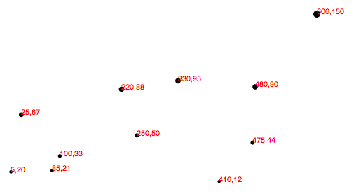

Освоив масштабирование с использованием D3, мы построили такую точечную диаграмму:
Давайте добавим горизонтальную и вертикальную оси, чтобы мы могли избавиться от ужасных красных цифр, захламляющих нашу диаграмму.
Подобно масштабирующей функции, оси в D3 также являются функциями, параметры которых вам необходимо определить. В отличии от масштабирующей функции, когда вызывается функция построения оси, она не возвращает значение, она генерирует визуальные элементы оси, а именно линии, метки и отметки.
Заметьте, что функции построения осей имеют свою специфику, так как они генерируют SVG-элементы. Также оси предназначены для использования с количественной шкалой(вместо порядковой).
Используйте d3.svg.axis() для создания общего вида функцию оси:
var xAxis = d3.svg.axis();
Как минимум, каждой оси необходимо знать, с каким масштабированием ей работать. Для этого хорошо подойдет наша масштабирующая функция по х из предыдущей главы:
xAxis.scale(xScale);
Также мы можем указать, где должны отображаться метки на оси относительно самой себя. По умолчанию они будут отображаться снизу(хотя это значение по умолчанию, не повредит указать местоположение явно).
xAxis.orient("bottom");
Конечно, мы можем быть более краткими, и разместить код в одну строчку:
var xAxis = d3.svg.axis()
.scale(xScale)
.orient("bottom");
Наконец, собственно, для создания оси и вставки всех этих маленьких линий и меток внутрь нашего SVG, мы должны вызвать функцию xAxis методом call(). Я расположу этот код в конце нашего скрипта, так, чтобы ось была создана после создания всех остальных элементов в SVG:
svg.append("g").call(xAxis);
Функция call() библиотеки D3(https://github.com/mbostock/d3/wiki/Selections#call) принимает выборку в качестве входных данных, а потом передает ее любой функции. Так, в нашем случае, мы просто добавили новый групповой элемент g, чтобы хранить все элементы, которые будут сгенерированы для построения оси(Элемент g не является необходимым, но собирает элементы в кучу и позволяет нам применять css-классы, которые мы вскоре напишем).
Этот элемент g становится выборкой для следующего метода в нашей цепочке вызовов функций. Метод call() берет эту выборку и передает ее функции xAxis, именно поэтому наша ось создается внутри нового элемента g. Фрагмент кода выше является хорошим, чистым и коротким, но мы сделаем для него эквивалентную запись:
svg.append("g")
.call(d3.svg.axis()
.scale(xScale)
.orient("bottom"));
Смотрите, вы могли бы втиснуть весь код функции оси внутри call(), но нам, как правило, проще сперва определить функцию, а лишь потом вызвать функцию. Так работают наши мозги. В любом случае, результат выглядит так:
Вроде бы у нас получилась ось, но она не является ни красивой, ни полезной. Чтобы это исправить, давайте сначала назначим класс axis новому элементу g. Это мы можем сделать с помощью CSS:
svg.append("g")
.attr("class", "axis") //Assign "axis" class
.call(xAxis);
Дальше, мы напишем наш первый CSS-стиль. Для этого поднимитесь выше, к тегу
на нашей странице:
.axis path,
.axis line {
fill: none;
stroke: black;
shape-rendering: crispEdges;
}
.axis text {
font-family: sans-serif;
font-size: 11px;
}
Свойство shape-rendering - это SVG-атрибут, используются нами для того, чтобы ось и отметки на ней выглядели превосходно. Никаких эффектов размытия для осей мы не наблюдаем!
Уже лучше, но верхушка нашей оси несколько обрезана, но мы ее все равно хотим сместить к низу страницы. Мы можем использовать атрибут transform для всей группы элементов, представляющих ось(элемент g), чтобы расположить ось снизу:
svg.append("g")
.attr("class", "axis")
.attr("transform", "translate(0," + (h - padding) + ")")
.call(xAxis);
Обратите внимание, что использование (h - padding) устанавливает верхнюю границу нашей оси равной высоте всего изображения минут отступ(padding ), который мы задали ранее.
Намного лучше! Здесь представлен рабочий код.
Отметки на осях служат для передачи информации. Еще больше отметок не обязательно лучше, и в определенный момент они начинают загромождать диаграмму. Вы должны заметить, что мы нигде не указывали, сколько отметок должно быть на оси, и через какие промежутки они должны появляться. Без точных инструкций, D3 автомагически проверил нашу масштабирующую функцию xScale, и вывел обоснованные суждения о том, сколько меток должно быть, и через какие интервалы они расположены.
Как вы можете себе представить, вы можете модифицировать все аспекты ваших осей. Начнем с грубого указания количества меток, используя метод ticks():
var xAxis = d3.svg.axis()
.scale(xScale)
.orient("bottom")
.ticks(5); //Set rough # of ticks
Вы, вероятно, заметили, что мы указали лишь пять меток, в то время как D3 нам нарисовал их целых семь. Это случилось потому, что D3 понял, что если использовать пять меток, то получатся невнятные интервалы 0, 150, 300, 450 и 600. D3 интерпретирует значение, переданное в метод ticks() как желаемое, но не обязательное, и переопределил ваше предложение по своему усмотрению, ориентируясь на удобочитаемость для человека, в нашем случае разделил шкалу на интервалы по 100. Именно поэтому эта функция является гениальной, поскольку увеличивает масштабируемость вашего графика. Если меняются значения набора данных и входная область значений сжимается или расширяется(большие числа или меньшие числа), D3 гарантирует, что метки делений по-прежнему удобны и понятны для чтения.
Пришло время для создания вертикальной оси! Это мы сделаем путем копирования и настройки уже написанного кода для оси х:
//Define Y axis
var yAxis = d3.svg.axis()
.scale(yScale)
.orient("left")
.ticks(5);
и размещаем ее слева:
//Create Y axis
svg.append("g")
.attr("class", "axis")
.attr("transform", "translate(" + padding + ",0)")
.call(yAxis);
Обратите внимание, что метки оси y будут находится слева от нее, и именно поэтому мы добавляем отступ padding, который уже был создан.
Теперь график похож на настоящий! Но метки на yAxis обрезаются. Им надо предоставить больше пространства слева. Давайте увеличим нашу переменную отступа с 20 до 30:
var padding = 30;
Конечно, вы могли бы использовать отдельные переменные отступа для каждой оси координат для большей надежности, назвав их, например, xPadding и yPadding.
Здесь пример рабочего кода, и вот как выглядит результат:
Для того, чтобы доказать вам, что наши оси масштабируемы, я сделаю так, чтобы начальная выборка создавалась путем добавления в нее случайных значений:
//Dynamic, random dataset
var dataset = [];
var numDataPoints = 50;
var xRange = Math.random() * 1000;
var yRange = Math.random() * 1000;
for (var i = 0; i < numDataPoints; i++) {
var newNumber1 = Math.round(Math.random() * xRange);
var newNumber2 = Math.round(Math.random() * yRange);
dataset.push([newNumber1, newNumber2]);
}
Этот код инициализирует пустой массив, потом 50 раз подряд генерирует два случайных числа, и добавляет эту пару в наш массив, представляющий собой набор данных.
Этот код находится здесь. Каждый раз при перезагрузке страницы, вы будете получить различные наборы данных. Обратите внимание, как обе оси масштабируются в соответствии с новой областью входных данных, также как и отметки и метки.
И наконец, я думаю, мы можем избавиться от этих ужасных красных меток, закомментировав необходимые строки кода:
Конечный вид нашей точечной диаграммы!
Одна последняя вещь: когда мы работаем с целыми числами - все очень приятно и красиво. Но данные обычно грязнее, и в этих случаях требуется больший контроль над тем, как форматируются метки на осях. Например, вы можете включить три знака после запятой, или отображение значений в процентах, или оба варианта.
В этом случае, вы могли бы сначала определить новый номер функции форматирования. Это, например, говорит, чтобы значение преобразовывалось в проценты с одним числом после запятой(для более близкого знакомства см. документацию d3.format()).
var formatAsPercentage = d3.format(".1%");
Сделаем, чтобы это форматирование было использовано для меток для оси х:
xAxis.tickFormat(formatAsPercentage);
Подсказка: проще всего проверить результат работы кода в консоли JavaScript. Например, достаточно открыть любую страницу, которая загружает D3, например конечную версию нашей точечной диаграммы, и ввести в консоль на той странице ваши правила форматирования. Затем, проверьте функцию, передавая ей разные значения на вход:
Вы можете видеть, как числа 0.54321 преобразовано в 54.3%. Для целей наглядного отображения - превосходно!